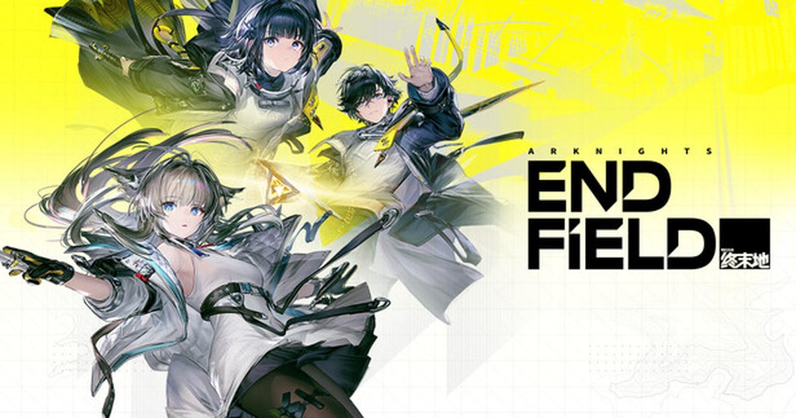

2026-08-15 · 长线观察
2026 年 1 月 22 日，《明日方舟：终末地》（Arknights: Endfield）全平台公测——PC、PS5、iOS、Android 一次铺开。开服前两年，玩家社区反复刷着同一个梗：「Whenfield？」（终末地到底什么时候来）。如今半年过去，版本已经从 1.0「零号委托」滚到 7 月 16 日的 1.4「向渊行」。这篇不聊「它好不好玩」这种开场白级别的问题，聊点更实在的：鹰角把一款 2D 塔防，重写成「3D 即时策略 + 自动化模拟经营」的混合体，这步棋半年后回头看，到底是远见，还是把自己架在了尴尬的中间地带。

先承认一件事：在跳票成风的二游圈，终末地能按时在 1 月落地，本身就是一场胜利。更别说它上线前全球社媒粉丝就破了千万（3 月 23 日官方确认），说明「方舟」这块招牌的号召力，远不止 2D 塔防那批老玩家。但「来的人多」和「留得住人」是两回事——这才有了这篇半年复盘的必要。
版本节奏也够密：1.1「新潮起，故渊离」(3/12)、1.2「春晓时」(4/17)、1.3「寻遗散记」(6/5)、1.4「向渊行」(7/16)。平均每两个月一个大版本，这对一款带模拟经营底子的 3D 游戏来说，产能不算保守。
1) 战斗：从「摆格子」到「你亲自下场」。终末地的战斗是即时制的——你直接操控主角（管理员 / Endministrator）跑动输出，同时场上最多同屏 4 名干员协同，靠积攒的 SP 释放战斗技能，并通过各自触发的「连携技（Combo）」打出连锁。元素体系是它和本体一脉相承的灵魂：物理 / 灼热 / 电磁 / 寒冷 / 自然五种伤害，施加同类法术附着会触发「法术爆发」，异类叠加则触发异常——燃烧、导电、冻结、腐蚀。懂本体的老玩家一秒上手，新人也能靠「挂异常→引爆」的直觉打出爽感。
2) 真正的主角其实是「工厂」。这是终末地最被低估的差异化：那套「自动化集成工业系统」——供电桩、传送带、分流器、协议核心，让你在荒地上「打印」出一条自动产线，把装备、电池、战术物品量产出来。它本质上是在开放世界 RPG 里塞进了一个迷你工厂游戏。对比原神 / 鸣潮那种「砍怪掉材料→背包合成」的线性循环，终末地让你「造一台机器替你打工」，这种「生产建设」的正反馈，是它和所有开放世界二游拉开身位的关键。
3) 再旅者：给老粉的彩蛋，给新人的入口。世界观设定在《明日方舟》本体约 80–100 年后（最早测试曾写 500 年，后修正）。登场的一批「再旅者」，是以本体干员为原型、但人格独立、且大多并非感染者的新角色。老玩家看到熟悉的名字会心一笑，新人则完全不需要补完本体——开局甚至有一段约 10 分钟的可选世界观回顾帮你补课。鹰角在这点上比多数「续作吃 IP 老本」的做法体面得多。
争议也恰恰来自这同一套混合身份。beta 时期就有老测试员直言：战斗「策略深度不足」——自动攻击循环明显，缺少取消、 stamina 管理、角色切换（而原神 / 鸣潮都有），导致实战容易退化成「平 A → 等 SP → 放连携 → 挤大招」的肌肉记忆；再加上一度盛行的「单电队」（Prolifica、Avienna、Arkite 等）压低了配队多样性。换句话说，它既没完全继承本体那种「烧脑塔防」的策略锐度，也没在 ARPG 动作性上追上第一梯队——卡在中间。
另一个是「时间尊不尊重玩家」的隐患。有测试者统计，每日的赠礼、各区域证券交易所、前哨站、理智 farming 等日常叠加起来，轻松超过一小时。对一款主打「生产建设爽感」的游戏，把爽感稀释成打卡，是最可惜的转弯。再加上角色（headhunting）与武器（Arsenal）双卡池分离、保底约 80–90 抽、井（spark）约 240 抽的设定，付费压力是实打实的。
但往好处看：1.4「向渊行」的命名和体量，暗示剧情与地图复杂度在持续加码，鹰角明显在把「半年口碑」往「长线内容深度」上引。技术上它基于深度魔改的 Unity，PC 端即便旧显卡也跑得顺，UI 与角色微表情的打磨在二游里是第一梯队——这些「底子」是后期补玩法深度的本钱。
我们的评分：8.2 / 10（半年综合）。扣分给「战斗策略深度待补 + 日常耗时偏重」，加分给「模拟经营差异化 + 技术底子 + 世界观勾连的体面」。它不是完美的二游，但它是目前最不想被归类成「又一款开放世界」的那一个。
我们的观察：终末地真正的护城河不是战斗，是「工厂」。当同行都在卷大世界探索和角色颜值时，它默默把「自动化产线」做成了核心 loop——这部分越往后越能滚雪球，因为玩家的产线资产会随版本沉淀。
我们的观点：别用本体《明日方舟》的塔防标准去审它，也别用原神的标准去审它。它是个「第三物种」：用策略 RPG 的骨架，套上模拟经营的心。卡在中间是现状，但「中间」也可能是蓝海——前提是 1.5 往后把战斗的取消/切换机制补上。
我们的案例 / 对比：同样「2D 爆款做 3D 化」，有的沦为换皮（玩家用脚投票），有的像终末地这样敢动核心玩法（风险更高但上限更高）。横向比开放世界二游，它用「生产建设」换掉了「砍怪掉材料」，这是真差异而非贴标差异。
我们的实验：给纯新人的最低门槛入坑顺序——先开那 10 分钟世界观回顾 → 主线推到解锁「自动化集成工业系统」为止（别跳过教学产线，那是本作灵魂）→ 再补本体动画/游戏了解再旅者原型彩蛋。老方舟玩家则建议直接冲剧情，顺手把熟悉名字的再旅者练起来。
终末地用半年证明了一件事：鹰角没有躺在「方舟」IP 上做换皮，而是认真地——甚至有点冒险地——把塔防基因改写成了一个 3D 策略 + 工厂经营的混合体。它现在卡在「策略不够深、动作不够爽」的中间地带，但那条会自动替你干活的产线，和那个与本体遥遥相望的再旅者宇宙，给了它足够独特的留人理由。2026 年 1 月它赢了「终于上线」，接下来的问题只剩一个：1.5 往后，鹰角会不会把战斗那块最弱的拼图，也补齐。我们蹲一个。